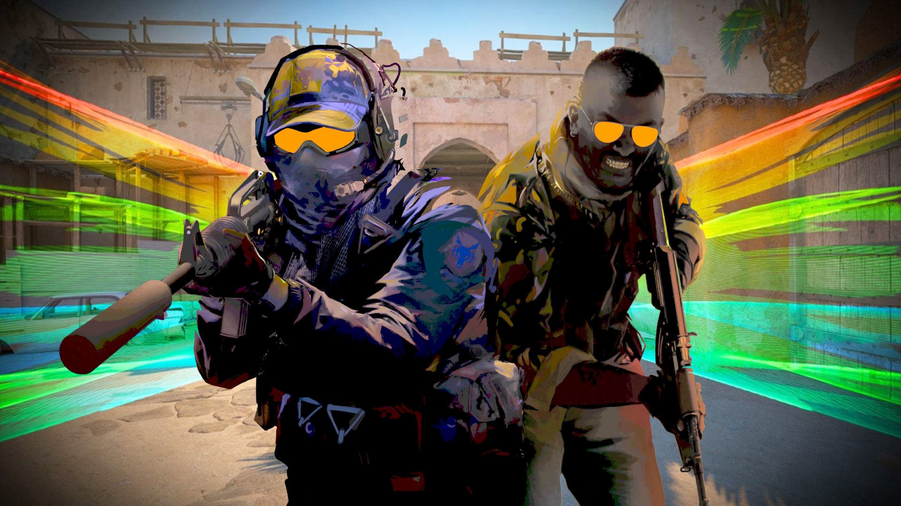
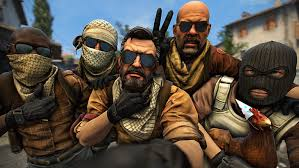

Counter-Strike 2 (CS2): The Next Evolution of Competitive FPS Gaming
Counter-Strike 2 (CS2) is the latest installment in the legendary Counter-Strike franchise developed by Valve. Released in 2023, CS2 is the direct successor to Counter-Strike: Global Offensive (CS:GO) and brings one of the biggest technical upgrades in the series’ history. Built on the Source 2 engine, the game modernizes the classic 5v5 tactical shooter while keeping its core competitive gameplay intact.
What is Counter-Strike 2?
CS2 is a free-to-play, round-based first-person shooter where two teams—Terrorists and Counter-Terrorists—compete against each other. Each match is divided into rounds, and the main objective depends on the mode, usually involving planting or defusing a bomb or eliminating the opposing team.
Despite its modern upgrades, CS2 stays true to the original formula that made Counter-Strike one of the most popular esports titles in the world.
Gameplay Overview
The gameplay in CS2 is highly competitive and skill-based. Each round starts with players purchasing weapons, grenades, and armor using in-game money earned from previous rounds. Teams must use strategy, communication, and precise aiming to win.
Key gameplay elements include:
- 5v5 tactical matches
- Bomb planting and defusal missions
- Economy-based weapon purchasing system
- No respawns during rounds

One of the biggest changes in CS2 is the improved smoke grenade system. Smokes are now dynamic and interact with bullets, explosions, and lighting, making gameplay more realistic and strategic.
Major Features of CS2
Source 2 Engine Upgrade
The game runs on Valve’s Source 2 engine, delivering better graphics, lighting, and overall performance improvements.
Sub-Tick System
CS2 replaces traditional tick-rate systems with a sub-tick update system, making player actions more accurate and responsive.
Improved Smoke Physics
Smoke grenades are now volumetric and dynamic. Players can shoot through them to create temporary visibility gaps or use grenades to disperse them.
Enhanced Maps
Classic maps like Dust II, Mirage, and Inferno have been visually upgraded with better textures, lighting, and details while maintaining their original layouts.
Game Modes
- Competitive Mode (ranked 5v5 matches)
- Premier Mode (advanced ranked system with map selection)
- Deathmatch (fast-paced respawn mode)
- Wingman (2v2 matches)
- Casual Mode (more relaxed gameplay)

CS2 in Esports
Counter-Strike 2 continues the legacy of CS:GO in the esports world. It remains one of the most played competitive shooters globally, with professional tournaments, leagues, and millions of viewers worldwide. Its strategic depth and high skill ceiling make it a top-tier esport.
Conclusion
Counter-Strike 2 is not just an update—it is a complete evolution of the Counter-Strike experience. With improved graphics, new mechanics, and smoother gameplay systems, CS2 preserves the classic competitive spirit while bringing the franchise into the modern gaming era.
Whether you are a new player or a veteran, CS2 offers a deep and exciting competitive experience that continues to shape the future of FPS gaming.